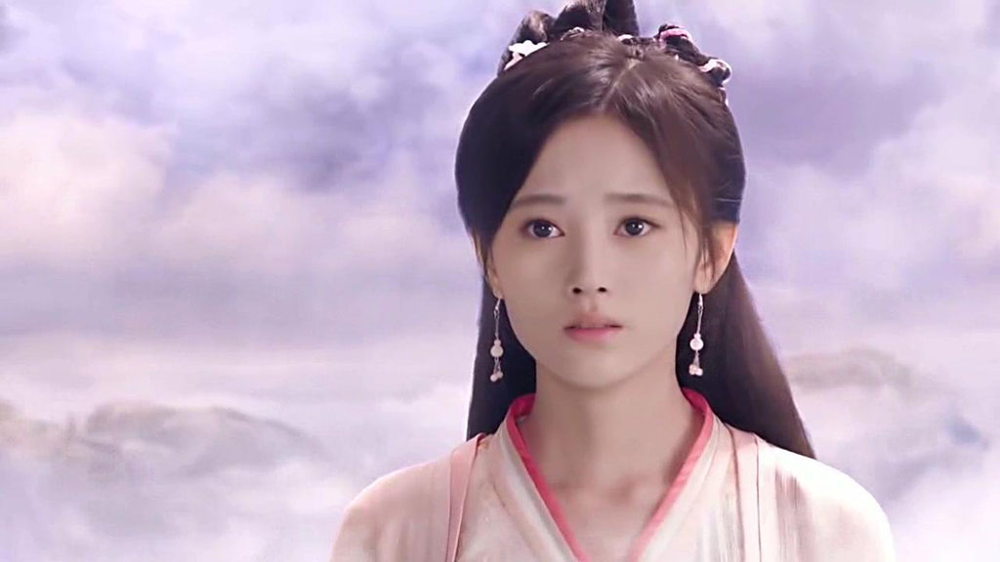
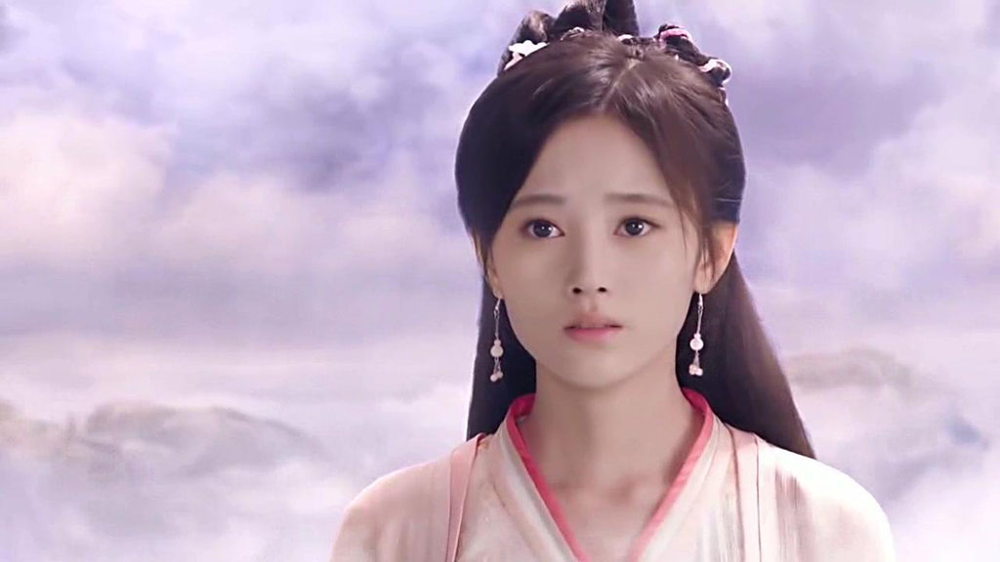

远古黄帝战败群魔，战斗中震裂成两截的宝剑化为剑气。东汉末年，剑气又变为朝云和暮云。彼时，人间一对朝云、暮云兄弟诞生，却因战乱自幼失散。成年后，这对兄弟相逢在蜀魏交界之地，朝云是飞羽军勇士，暮云则是铜雀军勇士，双方各为其主互不知情。铜雀军将领淳于越暴虐无道，滥杀无辜，时常侵掠蜀地。飞羽军为保境安民，与铜雀军常有征战，朝云和暮云也在战场上刀兵相见。待朝云逐渐知晓真相后，努力在兄弟亲情的感召下救暮云于危难之中。朝云眼见战争导致民不聊生，痛心疾首，誓要还百姓安居之地，他们在部族少女耶亚希帮助下，历尽艰险，克服种种困难，找到了象征正义的黄帝剑及精神力量，坚定了心中战胜邪恶、保卫和平的信念。最终兄弟同心，联手打败暴虐的淳于越，飞羽铜雀化剑为犁，消弭了战火，保一方黎民平安。剑的传说，绵延永恒。
 
